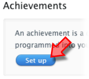
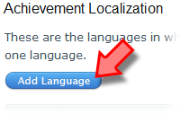

Tutorial
Page 4 of 8
Achievements
Achievements are distinctions that a player earns for reaching a milestone, or performing an action and these are defined by you and then programmed into your game, with the Game Center allowing
a maximum of 100 achievements per game.
NOTE : Once an achievement has gone live for any version of your game, it cannot be deleted.
To get started with defining your achievements you should be on the Game Center page for your game and click on the "Set up" button.

You can now start to define the achievements for your game with the following list of options being the first thing you need to fill out:
- Hidden Preference - Achievements marked as hidden will not be shown on Game Center until a player has achieved them.
- Achievement Reference Name - An internal name that you must provide for each achievement which is the name you will use if you search for the achievement within iTunes Connect.
- Achievement ID - A chosen alphanumeric identifier for your achievement. This ID is limited to 100 characters and you should note that the Achievement ID is a permanent setting
and therefore cannot be edited at a later date. It must also be unique over all your games, so you cannot have any two games with the same achievement ID. We recommend that
you set both the ID and the Reference Name to be exactly the same as it makes things much easier!
- Point Value : The points that your achievement is worth. There is a maximum of 100 points per achievement and a maximum of 1000 points total for all achievements.
You will see your remaining points below this field.
As before with the Leaderboards, there is also an option to set the language for your achievement.

This is really where you set how the achievement will be displayed to those people that play your game. The following sections exist and should be filled in:
- Language - This is the language in which your Achievement will appear.
- Title - The localized title of this achievement as you would like it to appear in Game Center.
- Pre-earned Description - The description of your achievement as it will appear to a Game Center user before they have earned it, for example "Get this by killing 10 aliens!".
- Earned Description - The description of your achievement as it will appear to a Game Center user after they have earned it, for example "Awarded for having killed 10 aliens!".
- Image - An image to reflect your achievement. Image must be a .jpeg, .jpg, .tif, .tiff, or .png file that is 512x512 pixels, at least 72 DPI, and in the RGB color space. RGBa is also supported.
Once that is done you should click on the "Save" button, then select "Save Changes" which will take you back to the Achievements list page. Here you can see all of your created
achievements and you can search, manage and delete achievements as well as see whether your achievement is currently live or not. If you wish to add further achievements, you should click
"Add New Achievement" and repeat the process outlined above.
Click on the Next button to go to the next page of the tutorial.